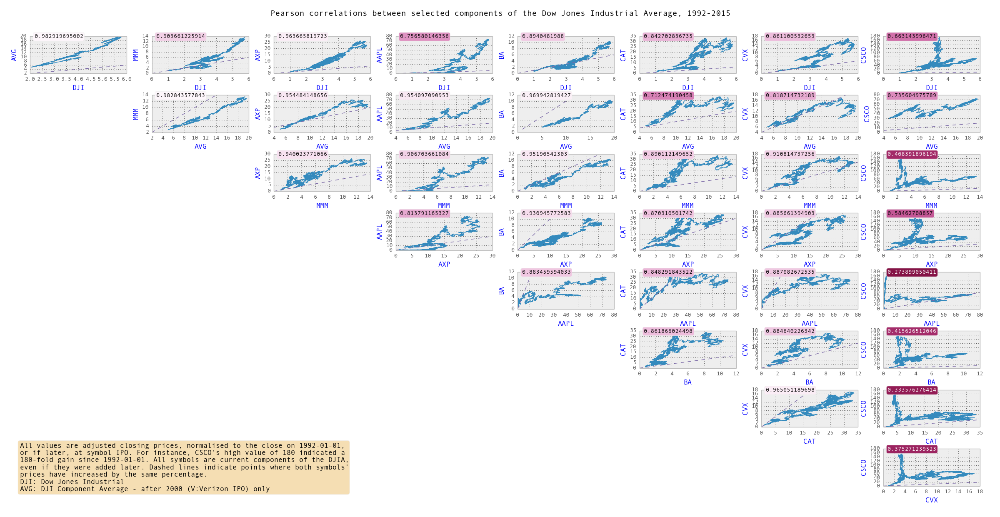

Correlations in Components of the DJIA
This was a Python script I wrote, relying heavily on use of Pandas and the Quandl API. It finds Pearson correlations (covariance / SD) in components of the Dow Jones Industrial index. The pink/white numbers are R-squared coefficients.
